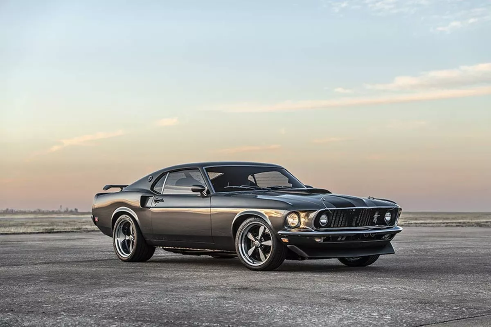
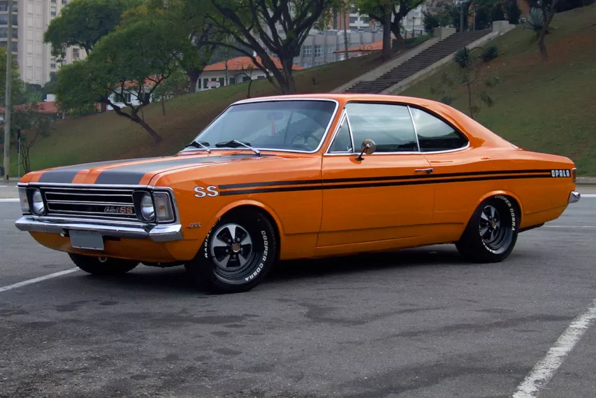
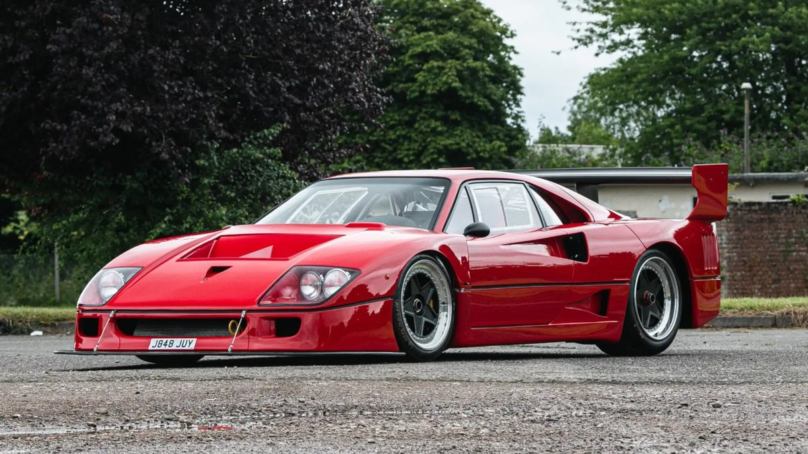

<!DOCTYPE html>
<html lang="pt-BR"></html>
<head>
  <meta charset="UTF-8" />
  <meta name="viewport" content="width=device-width, initial-scale=1, maximum-scale=1">
  <link rel="stylesheet" href="css/style.css" />
  <title>Carros antigos</title>
</head>

<body>
  <header>
    <div class="head">
      <div class="titulos1">
        <h4>Início</h4>
        <h4>Detalhes</h4>
        <h4>Preços</h4>
        <h4>Imagens</h4>
      </div>
      <div id="titulos2">
        <h4>Login</h4>
      </div>
    </div>
  </header>

  <div class="conjunto">
    <div class="box">
      
      <p>
        O Volkswagen Typ 1, popularmente conhecido como Fusca (no Brasil) ou
        Carocha (em Portugal), foi o primeiro modelo de automóvel fabricado pela
        companhia alemã Volkswagen, sendo produzido entre 1938 e 2003. Foi o
        carro mais vendido no mundo, ultrapassando em 1972 o recorde que
        pertencia até então ao Ford Modelo T, de origem estadunidense.O último
        exemplar marcou o fim da longa produção de 65 anos do Fusca, durante a
        qual foram fabricados 21 529 464 unidades, números que fazem dele o
        modelo único mais produzido do mundo em todos os tempos.
      </p>
    </div>
    <div class="box">
      
      <p>
        O Ford Mustang é um automóvel desportivo produzido pela Ford Motor
        Company. O carro foi apresentado ao público em 17 de abril de 1964
        durante a New York World's Fair. O Mustang, apesar de ter sofrido
        grandes alterações ao longo dos anos é a mais antiga linha de automóveis
        da Ford, cujo nome se inspira na única raça de cavalo selvagem do país.
        Foi o primeiro "Muscle Car" da história, sendo seguido anos mais tarde
        por modelos concorrentes inspirados claramente nele.
      </p>
    </div>
    <div class="box">
      
      <p>
        O Chevrolet Opala é o primeiro automóvel de passeio desenvolvido e
        fabricado pela General Motors do Brasil, de 1968 a 1992.Lançado como
        concorrente do Ford Galaxie e do Dodge Dart, o Opala foi apresentado ao
        público brasileiro na edição de 1968 do Salão do Automóvel de São Paulo.
        Sua carroceria foi inspirada no alemão Opel Rekord, mas com estilo e
        mecânica do norte-americano Chevrolet Impala, o que fez a montadora
        batizá-lo com o acrônimo Opala (Opel+Impala). De forma rápida foi aceito
        pelo público, tornando-se um modelo consagrado. Teve diversos usos, como
        veículo particular e viatura de polícia. Após mais de vinte anos do fim
        de sua fabricação, o modelo ainda é utilizado como carro diário, também
        atingindo o prestígio de objeto de coleção.
      </p>
    </div>
    <div class="box">
      
      <p>
        A Ferrari F40 é um automóvel superesportivo coupé de duas portas, de
        tração traseira e motor central-traseiro. Foi a sucessora do modelo 288
        GTO e é considerada a avó do modelo Ferrari Enzo (modelo que foi
        batizado com o nome do fundador da empresa), e o último carro feito com
        a supervisão pessoal de Enzo Ferrari, falecido no ano de 1988. Foi
        apresentada em 21 de julho de 1987, fabricada para comemorar o
        quadragésimo aniversário da marca italiana Ferrari. Naquele tempo, foi o
        carro mais veloz do mundo a ser produzido em série, chegando à 324 km/h,
        uma marca impressionante para a época.
      </p>
    </div>
  </div>
</body>
